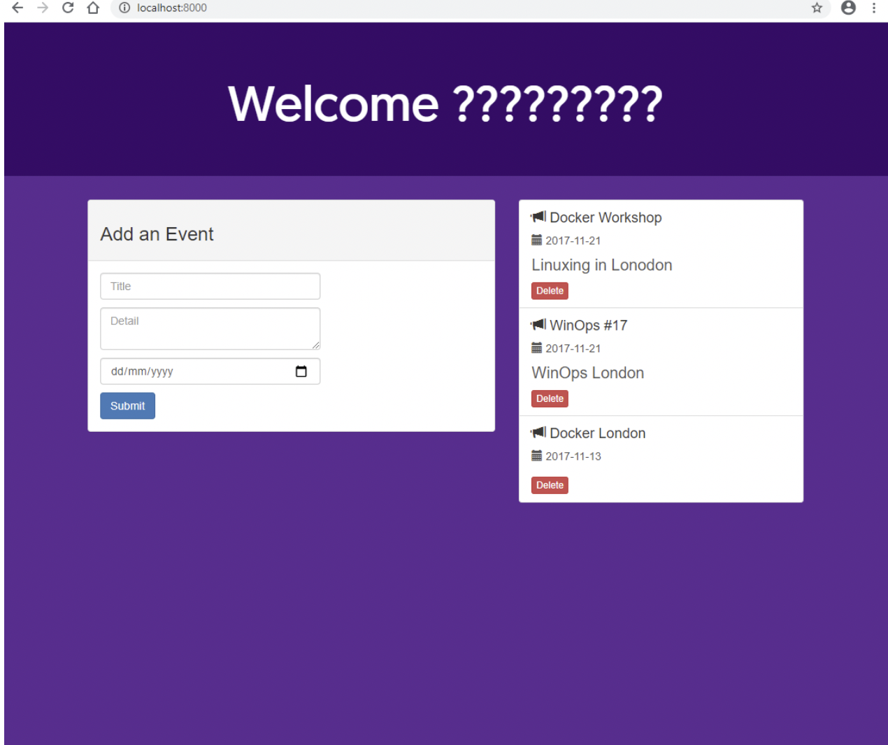
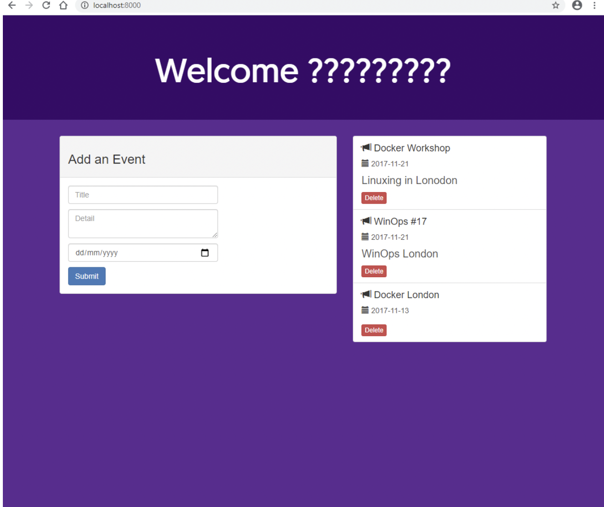

In this week I downloaded and installed docker on my computer Desktop. After installing it successfully I checked the version of ducker by << docker --version >> command and found out my docker version is 19.03.12. I ran the hello-world Docker image to test if my installation is working correctly. I used the following command to run my first image, << docker run hello-world >> and it ran successfully. I learned how I can remove the container by << docker rm --force bb >> command. However, I I later understood that if I first stop container by << docker stop >> command, I no longer need to use a --force.
Also I learnt a few commands for Docker. For instance << docker ps --all >> shows all the containers on the machine and << docker image ls >> To check the downloaded image . Also I learnt how to create the container and how to remove container.
During this week I had two stand up meetings. We shared what we did last week and what we should do this week with the team. Also I continued to work on Docker after setting up my development environment. I started developing containerized applications. I downloaded the node-bulletin-board example project. This is a simple bulletin board application written in Node.js. I used the Git to clone the example project from github. I also used the visual studio code to open the project and see the Docker files and also figure out how Docker files describe how to assemble a private filesystem for a container. For example workDir is for setting the working directory or Expose 8080 described which port the container is listening.
During this week I built my first image, I used the the following command to craete the image << docker build --tag bulletinboard:1.0 . >> and it's successfully tagged. After building my image I ran the command to start the container based on my new image which is bulletinboard:1.0. Also I visited my application at localhost:8000 and saw my bulletin board application up and running. I tried to play around with the code of bulletin board application on visual studio to have a better understanding of how to modify the application in docker. At the beginning I had difficulties changing the application but after a while Grayson helped me to solve my problem by the following commands << docker container stop c141c33661c4 && docker container rm c141c33661c4 >>. Using this command I Stopped the container and then removed it. Then I ran the following command to build my bulletin board image: << docker build --tag bulletinboard:1.0 .>> After that, I ran the following command to start a container based on my new image which is bulletinboard image << docker run --publish 8000:8080 --detach --name bb bulletinboard:1. >> Finally I was able to change my application's Title, and did some more changes in my applicaton. Then after making sure my app works successfully, I tried to delete the bulletin board container.
In this week I tried to set up my dockerHub account. First I had some research about Docker Hub and how I can create it and how it works. I signed in to docker hub and then I created my Docker ID so I could sign in. I also tried to sign in from command line. After setting up my Docker hub I created the repository with bulletinboard name and I shared my image on Docker Hub, and finally by following command << docker push sabisingh/bulletinboard:1.0 >>I pushed my image in to docker hub.
At the end of this week I tried to finish my portfolio untill week four. I added some pictures for evidence for each week and I wrote some notes for each week about what I did and what I learnt. Also I had some more practice for docker to have a better understanding on it.


 

At this point, I've installed Docker Desktop on my computer. I ran a quick test to ensure I've set up docker. I learnt how to use docker and how to create the docker and image.
In week four I'm able to create the Image successfuly and perform a simple containerization of an application, also I am able to run the application and modify that application. Also I learnt about dockerhub and pushing the image in to dockerhub so I can use it in any remote computer.